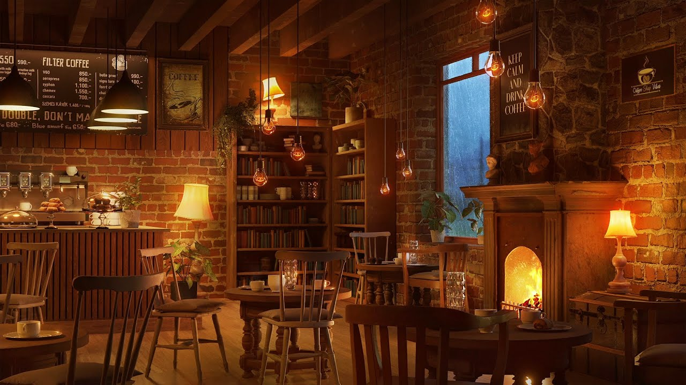
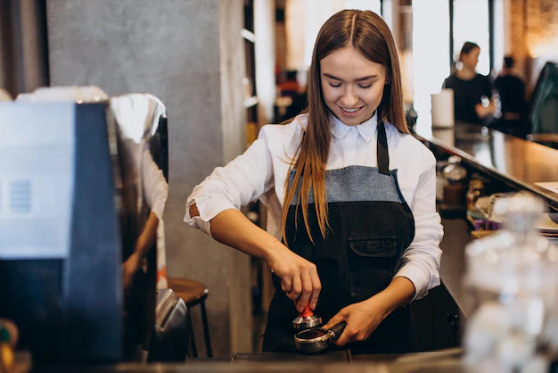

Nós somos uma loja que trabalha com seriedade. Fundada em 1988, por Johannes Del Marx, o maior barista de todos os tempos. Este tinha técnicas de arte no café tão incriveis que tornaram-se famosas pelo mundo todo. Tais técnicas foram sendo passadas conforme a administração do Pinscher's Cafeteria, que é hoje a melhor cafeteria de todas. Ela se encontra em Ananindeua, Pará. Muitissimo obrigado por ser um ótimo cliente. Aqui nós sempre temos a razão. :)